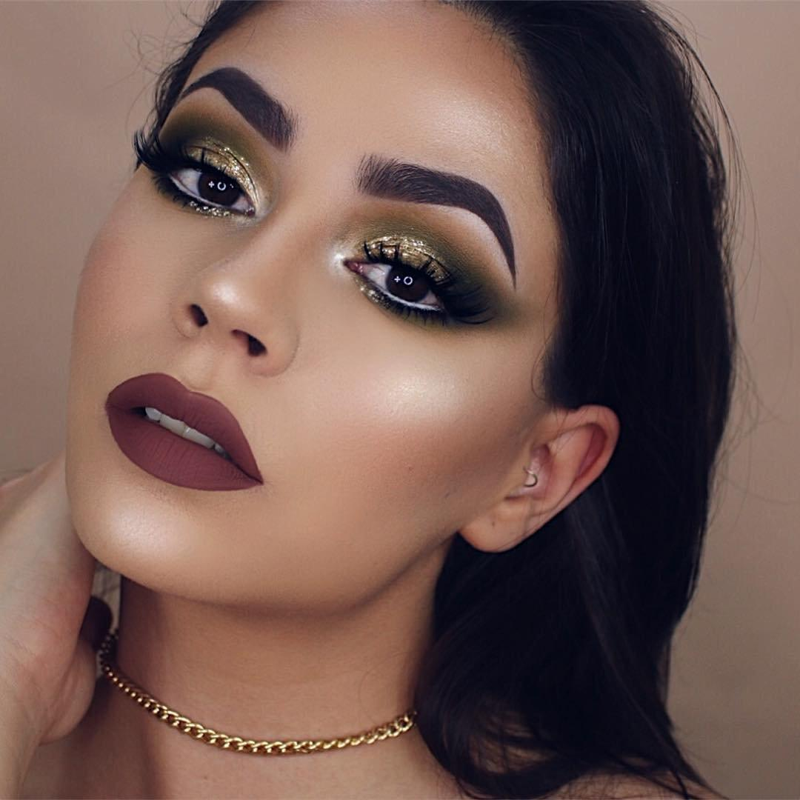

Day Style
Один из самых популярных макияжей – дневной. Он наиболее нейтральный и незаметный.
К ответвлениям этого макияжа относятся деловой (или же офисный), нюдовый и классический. Для этого стиля характерно
использование светлых нейтральных цветов. Дневной мэйк также часто называют «макияж без макияжа», поскольку он должен
быть максимально незаметным. Дневной макияж призван не привлекать внимание к вашему образу, а скрывать какие-то недостатки.

При помощи хорошей косметики вы будете выглядеть так, будто ваша внешность естественна и
красива от природы.
Для такого макияжа достаточно светлого тонального крема, который подходит по тону под вашу кожу,
нюдовой палетки теней и туши.
С помощью этих базовых продуктов вы можете создать идеальный мэйк, который вечером можно будет превратить в что-то более заметное
и эффектное.
{% endblock %}